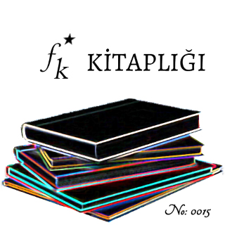

Kitap Adı: Artemis Fowl
Kitap Yazarı: Eoin Colfer
Çevirmen: Aylin Yelgin*
Yayınevi: Artemis
Sayfa Sayısı: 284 sayfa*
Basım Yılı: İlk Basım 2002*
Tarayan: Bilinmiyor
Düzenleyen: FK Kitaplığı
*Bilgiler idefixden alınmıştır.